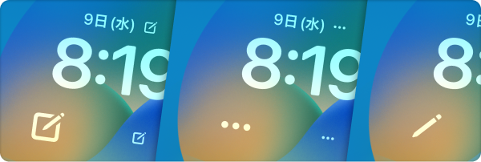

Приложение для ноутбука, посвященное новой функции iOS 16 Lock Screen Widget, которая выйдет осенью 2022 года!


Это приложение для блокнота, посвященное виджету экрана блокировки - приложению для iPhone/Apple Watch.
Когда вы хотите сделать заметку, вы можете быстро написать заметку на экране блокировки и проверить заметку на экране блокировки в любое время!
Работает с Apple Watch.
Дизайн заметки на экране блокировки может быть гибко настроен, поэтому вы можете использовать его в соответствии с различными целями "оставления заметок" и "отображения текста на экране блокировки".
При нажатии на виджет сразу же запускается клавиатура для редактирования заметки.




iPhone 14 Pro с функцией Always On Display превращает ваш iPhone в ближайший блокнот.
Цитата: https://www.apple.com/jp/iphone-14-pro/
Бесплатно
Скрыть рекламу (160 иен)